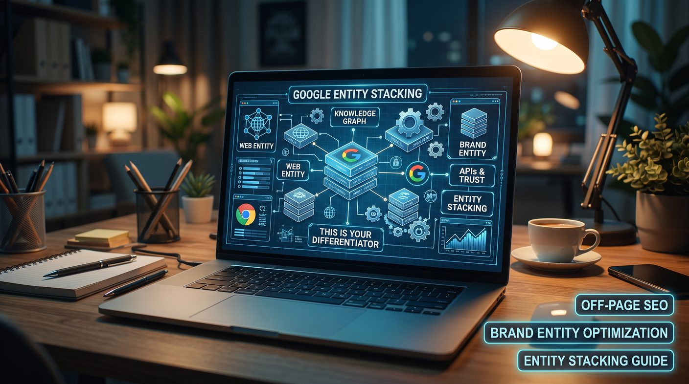

Google entity stacking means connecting online properties, profiles and references that represent the same brand so its identity is clear across the web. It is an informal SEO term; Google has no official entity stacking method and nothing guarantees rankings. The safe approach is accurate, consistent business information, relevant profiles, genuine third-party mentions and honest structured data, not fake profiles or artificial cross-link networks.
- What is Google entity stacking?
- How entity stacking is commonly used in SEO
- How Google understands brands and entities
- Entity stacking vs brand entity optimisation
- Potential benefits of a well-managed brand network
- How to build a brand entity network safely
- Using structured data to clarify your brand
- Common entity stacking mistakes
- How to measure entity SEO progress
- Is Google entity stacking worth it?
- Conclusion
What is Google entity stacking?
In SEO discussions, Google entity stacking usually means creating or connecting multiple online properties that represent or reference the same brand, person, organisation or business. These properties may include a company website, business profiles, social accounts, publisher pages, professional profiles and other relevant resources.
Some practitioners organise these assets into a network and connect them through links, consistent brand information and references. The intended goal is to make the business's identity and relationships easier to understand across the web.
It is important to separate this industry term from Google's documented concepts. Google uses systems that help it understand entities and relationships, but it does not publish an official "entity stacking" procedure or promise that connecting a set of web properties will improve rankings.
What is an entity in SEO?
An entity is a distinct, identifiable thing, such as a business, person, product, place or organisation. Search systems may use information from several sources to understand an entity and its relationships with other entities.
A Sri Lankan IT company, for example, may have a company website, a verified business profile, a LinkedIn company page, industry directory listings and references in relevant publications. When these resources accurately describe the same business, they help people and search systems connect information about that organisation.
How entity stacking is commonly used in SEO
In its typical SEO usage, entity stacking involves identifying relevant online properties, publishing accurate brand information and connecting related resources. Some strategies also use links between properties hosted on different platforms.
The difference between a useful brand network and a manipulative link scheme depends on its purpose, quality, transparency and implementation.
Common components
- Official website: the primary source of information about the business, its services, expertise and contact details.
- Business profiles: eligible profiles on platforms that customers or professional audiences genuinely use.
- Professional profiles: accurate company or author profiles that demonstrate a real professional identity.
- Industry listings: relevant directories, associations, supplier listings and professional organisations.
- Editorial mentions: genuine references in publications, interviews, case studies and industry resources.
- Supporting content: original articles, reports and useful resources that give more context about the business's expertise.
These elements should exist because they help people discover, verify or understand the business. Creating dozens of empty profiles just to link them together is no substitute for a strong brand presence.
How Google understands brands and entities
Search engines try to interpret the meaning of web content, identify entities and understand the relationships between them. Signals may include page content, links, structured data, references and information from sources the systems consider useful.
However, the exact signals and their weights are not fully public. You cannot tell from the existence of a group of connected profiles that Google has consolidated them into a particular entity or assigned a specific ranking benefit.
Consistency helps people identify the same business
Use an accurate business name, website, contact information, description and branding across official and legitimate profiles. If a business has multiple locations or related companies, represent those relationships truthfully instead of making separate organisations look like one entity.
Relationships should be genuine
If your company works with a supplier, belongs to an industry association, sponsors an event or collaborates with another business, you can describe those relationships where relevant. Do not invent affiliations, partnerships, ownership relationships or endorsements to influence search systems.
Entity stacking vs brand entity optimisation
Entity stacking typically describes the arrangement and interlinking of online properties. Brand entity optimisation is a broader, more sustainable approach to making a brand identifiable, consistent, relevant and credible across its online presence.
| Area | Entity stacking approach | Brand entity optimisation approach |
|---|---|---|
| Main objective | Connect multiple web properties associated with a brand. | Strengthen the accuracy, discoverability and credibility of the brand's online identity. |
| Property selection | May focus on platforms that allow profile creation and links. | Prioritises relevant, reputable platforms and real audience value. |
| Content | Can become repetitive when properties are created mainly for SEO. | Uses original, accurate information tailored to each platform's audience. |
| Links | May focus on connecting properties into a network. | Earns and maintains links where they provide context, discovery or genuine referral value. |
| Long-term value | Depends heavily on execution and may provide little value if the network is artificial. | Builds a consistent foundation for brand trust, customer discovery and sustainable SEO. |
For a business seeking long-term organic visibility, the goal should be a credible brand entity, not simply more connected properties.
Learn more about this broader approach in our guide to brand entity optimisation.
Potential benefits of a well-managed brand network
Connecting relevant brand resources can have practical benefits, but these should not be confused with guaranteed ranking improvements.
1. More consistent brand information
Accurate business details across legitimate profiles help customers recognise your organisation and reduce confusion caused by outdated or conflicting information.
2. Better discovery opportunities
Relevant directories, professional networks and industry publications can introduce your business to audiences who may not find it through your website alone.
3. More useful referral traffic
Links placed in relevant resources can send potential customers to service pages, case studies and educational content.
4. Stronger evidence of real-world expertise
Original research, useful contributions, genuine partnerships and credible editorial mentions help people assess the business's experience and relevance.
5. A more coherent online identity
A well-maintained network of official and relevant resources makes it easier for users to find the correct website, understand the company's services and verify its identity.
These outcomes depend on the quality of the resources and how people use them. Creating profiles and connecting them does not guarantee that Google will recognise a stronger entity or rank a website higher.
How to build a brand entity network safely
Businesses can adopt the useful parts of entity-based SEO without creating artificial link networks. This process focuses on accuracy, relevance and genuine business value.
Step 1: Establish your official source of truth
Your website should clearly explain who you are, what your business offers, whom you serve and how customers can contact you. Include accurate company information and dedicated pages for your main services; our About page is an example.
Where appropriate, provide author information, case studies, business details and evidence supporting your claims. Avoid publishing private information or details customers do not need.
Step 2: Audit existing brand properties
Search for your company name and review the profiles, listings and pages that appear. Record the website URL, business name, description, contact information, profile ownership and any outdated information.
Correct legitimate profiles where possible. Investigate duplicate or misleading listings, and use each platform's process to report inaccurate information. Your Google Business Profile deserves special attention; see our local SEO service.
Step 3: Prioritise relevant platforms
Choose platforms by business type, target audience and the platform's reputation. A local service company may benefit from eligible business profiles and regional directories, while a software company may prioritise professional networks, product directories, developer communities and industry publications.
Do not assume every profile must contain a backlink. Some platforms do not permit external links, and some apply nofollow or sponsored attributes. A profile can still be useful for visibility and customer trust. Our guide to building backlinks in Sri Lanka covers how to judge directories.
Step 4: Publish original, platform-appropriate information
Use accurate business descriptions tailored to each platform. Do not copy the same keyword-stuffed paragraph across dozens of sites or create fake articles to support a link network.
Publish material that reflects real expertise, such as practical guides, original research, project examples, useful commentary and educational resources.
Step 5: Connect resources where it makes sense
Link to your official website from legitimate profiles when permitted. Link between related articles on your own site to help readers explore connected topics, as explained in our internal linking guide. If an external publication references a resource, let the editor choose appropriate anchor text and link attributes.
Do not require every profile to link to every other profile. A web of artificial cross-links adds complexity without improving the experience or establishing meaningful relationships.
Step 6: Strengthen third-party credibility
Focus on earning references from sources that have a real reason to discuss your business. Examples include trade associations, suppliers, professional communities, relevant publications and partners with whom you have genuine relationships. Our link building service and 2026 backlinks guide describe what still works.
Do not fabricate reviews, buy endorsements disguised as independent recommendations, or misrepresent membership and accreditation.
Step 7: Review and maintain the network
Periodically review important profiles, update business information, remove obsolete links where you control them and correct inaccuracies. Prioritise resources that attract relevant visitors, support customers or represent important professional relationships.
Using structured data to clarify your brand
Structured data helps search engines interpret information that is already present on your website. For a business website, appropriate schema types may include Organization, LocalBusiness, Article and BreadcrumbList, depending on the content and the eligibility requirements of the search feature. See our schema markup guide.
Organization structured data can describe an organisation using accurate properties such as its name, URL, logo and other supported identifiers. Where appropriate, legitimate sameAs references can point to official profiles that represent the same organisation.
Use sameAs only for pages that genuinely identify the same entity. Do not add unrelated websites, profiles belonging to other organisations or low-quality properties just to expand a network.
Structured data should match visible, accurate information and comply with the relevant search engine guidelines. It does not guarantee a knowledge panel, improved rankings or AI citations, although consistent entity information can support visibility in AI search over time.
Common entity stacking mistakes
- Creating fake profiles: accounts that do not represent real people, businesses or legitimate activity undermine trust.
- Building artificial cross-link networks: connecting sites mainly to manipulate ranking signals creates link spam risk.
- Using unrelated platforms: a platform's ability to host a link does not make it relevant to your business.
- Publishing duplicate, low-value content: repeating the same article across multiple properties adds little useful information.
- Manipulating anchor text: forcing exact-match commercial anchors into every profile looks unnatural.
- Misusing structured data: marking unrelated profiles as the same entity misrepresents the real relationship.
- Claiming guaranteed results: no entity stacking configuration guarantees rankings, knowledge panels or AI-generated citations.
- Ignoring the customer experience: a large network is not useful if the information is inaccurate or the resources give no genuine value.
How to measure entity SEO progress
No single public score definitively measures whether Google understands your business as an entity. Monitor several indicators that reflect visibility, accuracy and business outcomes instead.
- Brand search visibility: monitor impressions and clicks for branded queries in Google Search Console.
- Website organic performance: track relevant service pages and informational content over time.
- Profile accuracy: review the correctness of your official business information across key platforms.
- Referral visits: identify traffic from directories, partner sites, publications and professional profiles where analytics makes this possible.
- Quality mentions and links: review relevant editorial references and legitimate industry relationships.
- AI mentions: check periodically whether AI search tools describe your business accurately; see AI visibility tracking.
- Business outcomes: measure qualified enquiries, calls, sales or other meaningful conversions.
Do not treat the number of profiles, links or structured data properties as proof of improved entity recognition. Assess the real quality and impact of the work.
Is Google entity stacking worth it?
Entity stacking is best understood as an informal SEO term, not an official Google optimisation method. Building a network of legitimate online properties can support brand discovery and information consistency, but artificial profile networks and manipulative linking should not be treated as a shortcut to higher rankings.
For most businesses, a stronger investment is to maintain an accurate official website, publish useful original content, keep legitimate business profiles updated, earn relevant editorial mentions and build genuine relationships in the industry.
This approach supports the wider goals of off-page SEO and brand entity optimisation without depending on unverified claims about how Google's ranking systems work.
Conclusion
Google entity stacking is often presented as a way to connect online properties and reinforce a brand's identity. The useful principle behind the concept is that a business should have a clear, consistent and credible presence across the web.
Rather than building a network just to manufacture SEO signals, prioritise accurate profiles, relevant publications, useful content, genuine business relationships and appropriate structured data. These practices improve how people discover and evaluate your business, and give you a more sustainable foundation for organic search visibility.
If you want to strengthen your brand's online presence and improve your off-page SEO strategy, explore our off-page SEO services and our guide to brand entity optimisation, or talk to an SEO company in Sri Lanka that builds brand presence without shortcuts.